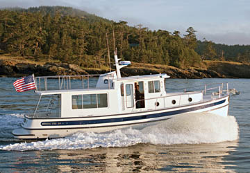

Nordic Tugs 39
2010–2015
The Nordic Tug 39 is an evolutionary update of the 37 using the same basic hull with significant topside, pilothouse, visibility, interior and systems revisions. Published specifications show a 40-foot overall length, 12 ft 11 in beam and single diesel shaft propulsion. It is a two-stateroom cruising platform intended for owner-operated extended coastal and inland travel, with flybridge installations available on some examples.

- Length
- 40 ft
- Beam
- 12.92 ft
- Draft
- 4.33 ft
- Hull behaviour
- Semi-Displacement
- Fuel
- Diesel
- Propulsion
- Shaft
- Engine configuration
- Single inboard diesel
- Boat family
- Tug
- Construction
- Fiberglass
Best for
- Couples wanting a two-stateroom pilothouse cruiser
- Extended Great Loop, Great Lakes and coastal cruising
- Owners prioritizing single-engine efficiency with modernized 37-family ergonomics
Trade-offs
- Substantial beam, weight and systems increase operating and storage costs
- Flybridge-equipped boats carry more windage and vertical clearance
- Single-engine maneuvering benefits from working thrusters
- The model had a short production life before evolving into the 40
Known concerns
- No model-specific concern has been promoted to B-Atlas’s evidence threshold. This does not mean the model has no age-, condition- or hull-specific risks.
Inspection focus
- Confirm model year, engine package and factory or owner-added flybridge equipment
- Inspect pilothouse and saloon window sealing and surrounding structure
- Moisture-test deck penetrations, cabin-top hardware and boat-deck areas
- Inspect exhaust, cooling, shaft, rudder and steering systems
- Inspect thrusters, generator, charging systems and owner-added electrical equipment
- Verify tank condition, supports, hoses and access for future replacement
Continue researching
Related boat models
39.83 ft · Semi-Displacement
44.67 ft · Semi-Displacement
34.92 ft · Semi-Displacement
32.08 ft · Semi-Displacement
26.33 ft · Semi-Displacement
40 ft · Semi-Displacement
About this record
B-Atlas preserves uncertainty: missing information remains unknown rather than being treated as a negative. Specifications and guidance describe the model record; individual boats can differ by year, equipment, refit and condition.